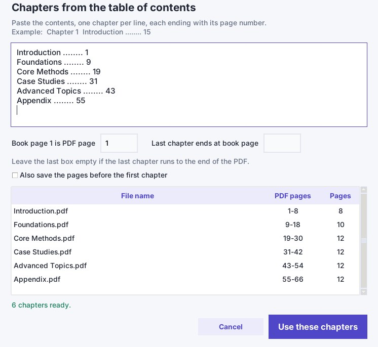

Split a PDF into chapters when it has no bookmarks
If your PDF has no bookmarks, you can still split it by chapter. Copy the book's printed table of contents, tell PDF BOOK Split which PDF page is book page 1, and it saves one PDF per chapter. It runs offline on Windows 10 and 11.
Why bookmark-based splitters fail on many books
Tools that split "by bookmarks" read the outline stored inside the PDF. Many downloaded, scanned or converted books have no outline at all, so those tools have nothing to cut on. The printed table of contents is still there on the page, but a splitter cannot use it unless you map it to PDF pages.
The real problem: printed page numbers are not PDF page numbers
The contents page says Chapter 3 ... 41. That is the number printed on the page, not the page number in your PDF viewer. A cover, a title page and a preface usually push everything forward. The difference is the page offset.
| Item | Value |
|---|---|
| Book page 1 sits on PDF page | 14 |
| Offset | 13 (14 - 1) |
| Contents says Chapter 3 starts on book page | 41 |
| Chapter 3 really starts on PDF page | 54 (41 + 13) |
PDF BOOK Split does this sum for every chapter, so you only enter one number.
How to split a PDF into chapters without bookmarks
- Open the PDF in PDF BOOK Split, or drag the file onto the window.
- Choose Book chapters. A window for the table of contents opens.
- Paste the contents, one chapter per line, each ending with its page number. Dots between the title and the number are fine, for example Introduction ........ 1.
- In Book page 1 is PDF page, type the PDF page where the book's page 1 appears.
- Check the preview table. It shows each file name and its PDF page range. If you want the cover and preface too, tick Also save the pages before the first chapter.
- Press Use these chapters, then Split PDF.
The files are saved in a new folder next to your PDF and named like 01 Introduction.pdf. Your original file is not changed. If the PDF does have bookmarks, they are copied into each new file.

How this compares with other ways to do it
| Method | Needs bookmarks in the PDF | Uses the printed contents | Works offline |
|---|---|---|---|
| Bookmark-based splitters, for example PDFsam in bookmark mode | Yes | No | Yes |
| Online splitters | Usually yes for chapter splitting | No | No, files are uploaded |
| Typing page ranges by hand in any splitter | No | You do the offset sums yourself | Depends on the tool |
| PDF BOOK Split, Book chapters mode | No | Yes | Yes |
If a book has only a few chapters, typing page ranges in any splitter is fine, and the offset sum above is the same. This program saves time when there are many chapters or many books.
What it does not do
- It does not find the contents page for you. You paste the text. This is the reliable method for books whose text cannot be extracted, which is common with Arabic PDFs.
- It runs on Windows 10 and 11, 64-bit. There is no Mac version.
Questions
Can I split a PDF into chapters if it has no bookmarks?
Yes. In PDF BOOK Split, choose Book chapters, paste the printed table of contents and enter which PDF page is book page 1. The program converts the printed page numbers to PDF pages and saves one file per chapter.
What is the page offset?
It is the difference between the page number printed in the book and the page number in the PDF. If book page 1 is on PDF page 14, the offset is 13, so book page 41 is PDF page 54.
Does it read the contents page automatically?
No. You paste the contents text yourself. This works for scanned books and for PDFs whose text cannot be extracted.
Are my files uploaded anywhere?
No. Splitting happens entirely on your computer, with no account and no upload.
Windows 10 / 11 (64-bit) · Works offline · 30-day refund